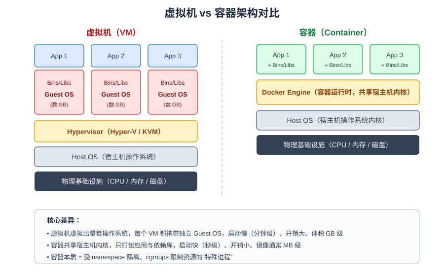
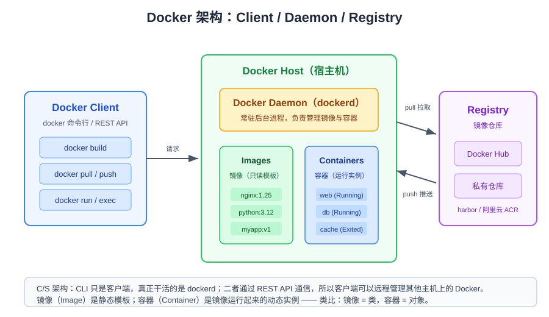
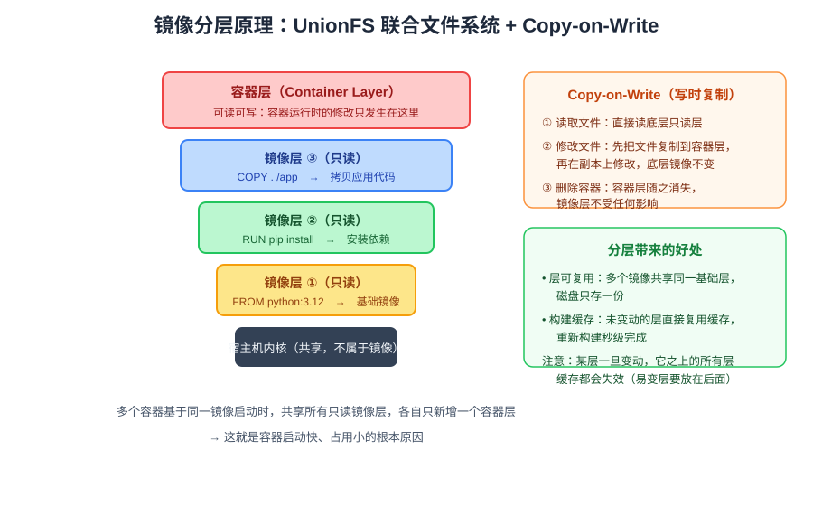
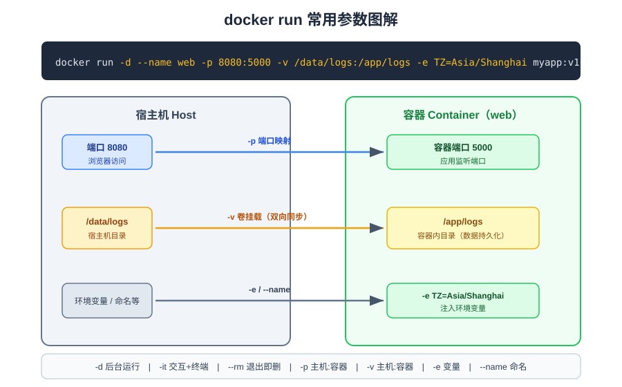
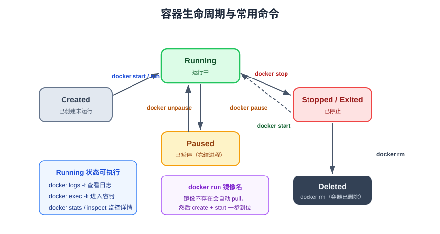

Docker 入门手册：编写 Dockerfile、构建镜像与容器管理
本篇目标：理解容器与镜像的本质，掌握 编写 Dockerfile → 构建镜像 → 运行容器 → 调试容器 的完整工作流， 熟练使用
docker build、docker run、docker exec、docker logs等核心命令。
一、Docker 解决了什么问题
软件开发中最经典的协作难题是："在我机器上明明能跑啊？"
代码在开发、测试、生产环境之间流转时，操作系统版本、运行时版本、系统依赖、环境变量的任何差异都可能导致故障。 Docker 的思路是：把应用连同它的整个运行环境（代码、运行时、系统库、配置）一起打包成一个标准化的单元——镜像， 任何安装了 Docker 的机器上运行这个镜像，表现都完全一致。
这个运行起来的单元就是容器（Container）。
容器与虚拟机的区别
很多人会把容器和虚拟机混为一谈，但它们的架构有本质区别：

| 对比项 | 虚拟机（VM） | 容器（Container） |
|---|---|---|
| 隔离级别 | 硬件级隔离（Hypervisor 虚拟硬件） | 进程级隔离（namespace + cgroups） |
| 操作系统 | 每个 VM 携带完整 Guest OS | 共享宿主机内核，只打包应用和依赖 |
| 体积 | GB 级 | MB 级 |
| 启动速度 | 分钟级（要启动整套 OS） | 秒级甚至毫秒级（就是启动一个进程） |
| 性能损耗 | 较大（额外 OS 开销） | 极小（接近原生进程） |
本质理解：容器不是"轻量级虚拟机"，而是一个被 namespace 隔离视图、被 cgroups 限制资源的特殊进程。
二、核心概念与 Docker 架构
学习 Docker 先记住三个核心概念：
- 镜像（Image）：只读的模板，包含运行应用所需的一切（文件系统 + 启动配置）。镜像分层构建、可复用。
- 容器（Container）：镜像运行起来的实例。一个镜像可以同时启动多个容器。 类比面向对象编程：镜像是类，容器是对象。
- 仓库（Registry）：存放和分发镜像的服务，默认是 Docker Hub，企业内常用 Harbor、阿里云 ACR 等私有仓库。
Docker 采用 C/S（客户端/服务端）架构：

- Docker Client：我们敲的
docker命令只是一个命令行客户端，它通过 REST API 与守护进程通信； - Docker Daemon（dockerd）：宿主机上常驻的后台服务，真正负责构建镜像、管理容器生命周期；
- Registry：Daemon 执行
pull时从仓库拉取镜像，执行push时把镜像推送到仓库。
正因为是 C/S 架构，客户端可以远程管理另一台机器上的 Docker（
DOCKER_HOST指向远程 daemon 即可）。
三、镜像分层原理（重点理解）
Docker 镜像并不是一个大的压缩包，而是由多层只读层（Read-only Layer） 堆叠而成，底层依赖 UnionFS（联合文件系统） 把多个目录"联合挂载"成一个统一的文件系统视图。

关键机制有两个：
1. 分层构建
Dockerfile 中的每一条文件操作指令（FROM、RUN、COPY、ADD）都会产生一层，层与层自上而下堆叠。
而 ENV、EXPOSE、CMD 等指令只写入元数据，不产生文件层。
2. Copy-on-Write（写时复制，CoW）
- 容器启动时，Docker 在所有只读镜像层之上加一个可读可写的容器层；
- 容器读取文件：直接从底层只读层读取；
- 容器修改/删除已有文件：先把该文件从只读层"复制"到容器层，再修改副本，底层镜像层不受影响；
- 容器删除后，容器层随之消失——所以容器内写入的数据默认是临时的（持久化需要用卷挂载
-v）。
分层带来的实际好处
- 层复用：多个镜像共享相同的基础层，磁盘上只存一份。比如 10 个应用都基于
python:3.12-slim， 基础层只占一份空间。 - 构建缓存：重新构建镜像时，未发生变化的层直接命中缓存，无需重复执行。 注意：某一层一旦变化，它之上的所有层缓存全部失效——这决定了 Dockerfile 的指令排序原则 （把变化频繁的层，如拷贝源码，放在后面，详见下文）。
可以用 docker history 镜像名 查看一个镜像的每一层及大小：
docker history nginx:1.25
四、编写 Dockerfile
Dockerfile 是一个文本文件（无扩展名），描述了如何一步步构建镜像。
4.1 一个完整示例
以一个 Python Flask 应用为例，项目目录结构：
myapp/
├── app.py
├── requirements.txt
└── Dockerfile
requirements.txt：
flask==3.0.3
app.py：
from flask import Flask
app = Flask(__name__)
@app.route("/")
def hello():
return "Hello, Docker!"
if __name__ == "__main__":
app.run(host="0.0.0.0", port=5000)
Dockerfile：
# 1. 基础镜像：一切镜像的起点
FROM python:3.12-slim
# 2. 设置工作目录（不存在会自动创建，后续指令都在此目录下执行）
WORKDIR /app
# 3. 设置环境变量（python 不缓冲输出，日志能实时打印）
ENV PYTHONUNBUFFERED=1
# 4. 先拷贝依赖清单并安装依赖（利用缓存：源码变动不会重装依赖）
COPY requirements.txt .
RUN pip install --no-cache-dir -r requirements.txt
# 5. 拷贝项目源码
COPY . .
# 6. 声明容器监听端口（仅文档作用，实际放行靠 -p 映射）
EXPOSE 5000
# 7. 容器启动时执行的默认命令
CMD ["python", "app.py"]
4.2 常用指令速查
| 指令 | 作用 | 示例 |
|---|---|---|
FROM |
指定基础镜像（每条 Dockerfile 必须以它开头） | FROM node:20-alpine |
WORKDIR |
设置工作目录，相当于 cd（建议用它替代 RUN cd） |
WORKDIR /app |
COPY |
把构建上下文中的文件复制进镜像 | COPY . /app |
ADD |
类似 COPY，额外支持自动解压 tar、远程 URL（一般优先用 COPY） | ADD app.tar.gz /opt/ |
RUN |
构建时执行命令，产生一个镜像层 | RUN apt-get update && apt-get install -y curl |
ENV |
设置环境变量（构建期和运行期都生效） | ENV TZ=Asia/Shanghai |
ARG |
构建参数（仅构建期生效，可用 --build-arg 传值） |
ARG VERSION=1.0 |
EXPOSE |
声明容器端口（元数据，不自动映射） | EXPOSE 8080 |
CMD |
容器启动的默认命令，可被 docker run 参数覆盖 |
CMD ["python", "app.py"] |
ENTRYPOINT |
容器启动的固定入口命令，docker run 后的参数会追加给它 |
ENTRYPOINT ["python"] |
VOLUME |
声明匿名卷，提示该目录数据应持久化 | VOLUME /data |
USER |
切换运行后续指令/容器进程的用户（安全实践：不用 root 跑应用） | USER appuser |
4.3 CMD 与 ENTRYPOINT 的区别（高频面试题）
CMD给出默认命令，运行容器时如果追加了命令会整体覆盖它：
bash
docker run myapp:v1 echo hi # echo hi 覆盖了 CMD ["python","app.py"]
ENTRYPOINT定义固定入口，不会被覆盖，docker run后面的参数会作为参数追加给它：
dockerfile
ENTRYPOINT ["python", "app.py"]
bash
docker run myapp:v1 --debug # 实际执行：python app.py --debug
两者都推荐使用 exec 形式（JSON 数组
["executable", "arg1"]）， 它不走 shell 包装，信号能正确传递给应用进程（docker stop才能优雅停止）。
4.4 .dockerignore 文件
与 .gitignore 类似，构建时排除不需要的文件，减小构建上下文体积、避免把敏感文件打进镜像：
__pycache__/
*.pyc
.git/
.env
node_modules/
venv/
*.log
4.5 Dockerfile 最佳实践
- 选择精简基础镜像：优先
alpine/slim变体，攻击面和体积都更小； - 指令排序：变化少的放前面，变化频繁的放后面——先拷贝依赖清单装依赖，最后才拷源码， 这样改代码后重新构建时依赖层命中缓存；
- 合并 RUN 指令：每条 RUN 都会产生一层，用
&&串起来，并在同一条里清理包管理器缓存：
dockerfile
RUN apt-get update \
&& apt-get install -y --no-install-recommends curl \
&& rm -rf /var/lib/apt/lists/*
- 一个容器只跑一个主进程；
- 不要在镜像里打包密钥，运行期用
-e或挂载 secret 文件注入。
五、构建镜像：docker build
5.1 基本命令
在 Dockerfile 所在目录执行：
docker build -t myapp:v1 .
-t myapp:v1：给镜像打标签（仓库名/镜像名:标签，标签省略时默认为latest）；- 末尾的
.：构建上下文（build context）——Docker 会把该目录打包发给 daemon，COPY/ADD只能引用上下文内的文件。上下文路径也可以是 Git 仓库 URL。
也可以用 -f 指定其他路径的 Dockerfile：
docker build -t myapp:v1 -f docker/Dockerfile .
5.2 构建过程与分层的对应关系
构建时可以看到每一步都对应一个中间层 ID，成功后逐层提交：

观察构建日志会发现：第二次构建时未改动的步骤会打印 CACHED，这就是分层缓存在起作用。
常用构建参数：
| 参数 | 作用 |
|---|---|
-t, --tag |
镜像名称与标签，可多次指定（如同时打 v1 和 latest） |
-f |
指定 Dockerfile 路径 |
--build-arg KEY=VALUE |
传入 ARG 定义的构建参数 |
--no-cache |
禁用缓存，从头构建 |
--platform linux/amd64 |
指定目标平台（跨架构构建时使用） |
5.3 多阶段构建（进阶）
编译型语言（Go、Java、前端打包等）的构建工具在运行时完全不需要，可以用多阶段构建 只把最终产物拷贝进精简的运行镜像：
# 阶段一：构建
FROM golang:1.22 AS builder
WORKDIR /src
COPY . .
RUN CGO_ENABLED=0 go build -o /app/server .
# 阶段二：运行（最终镜像里不含 Go 工具链）
FROM gcr.io/distroless/static-debian12
COPY --from=builder /app/server /server
ENTRYPOINT ["/server"]
六、运行容器：docker run
docker run 是最高频的命令，它等价于 create（创建）+ start（启动） 两步合一；
如果本地没有对应镜像，还会自动先 pull。
6.1 跑通第一个容器
docker run -d -p 8080:80 --name mynginx nginx:1.25
浏览器访问 http://localhost:8080 即可看到 Nginx 欢迎页。
6.2 常用参数图解

| 参数 | 含义 | 示例 |
|---|---|---|
-d |
后台运行（detached），返回容器 ID | -d |
-p |
端口映射，格式 宿主机端口:容器端口 |
-p 8080:5000 |
-v |
卷挂载，格式 宿主机路径:容器内路径，数据持久化/双向同步 |
-v /data/logs:/app/logs |
-e |
注入环境变量 | -e TZ=Asia/Shanghai |
--name |
给容器命名（不填会随机分配一个名字） | --name web |
-it |
交互式运行（-i 保持输入打开 + -t 分配终端），常用于进入 shell |
-it ubuntu bash |
--rm |
容器停止后自动删除（适合一次性任务） | --rm python:3.12 python -c "print(1)" |
--network |
指定容器网络 | --network mynet |
--restart |
重启策略（no/always/unless-stopped） |
--restart=always |
运行我们前面构建的 Flask 应用：
docker run -d --name myapp -p 8080:5000 -v $(pwd)/logs:/app/logs -e TZ=Asia/Shanghai myapp:v1
Windows PowerShell 下没有
$(pwd)，写法为：docker run -d --name myapp -p 8080:5000 -v "${PWD}/logs:/app/logs" myapp:v1
6.3 容器内的程序为什么要监听 0.0.0.0
容器有自己独立的网络命名空间，-p 8080:5000 是把宿主机流量转发到容器的 IP 上。
如果应用只监听 127.0.0.1，则只接受容器内部回环访问，端口映射会"不通"。
所以 Flask 要写 host="0.0.0.0"，其他框架同理。
七、进入运行中的容器：docker exec
容器后台运行后，经常需要进去排查问题（看文件、执行调试命令）：
docker exec -it myapp bash
-i：保持标准输入打开；-t：分配一个伪终端；两者组合即可获得交互式 shell；myapp：容器名或容器 ID；bash：要执行的命令（精简镜像里可能没有 bash，可用sh）。
退出容器但不停止容器：按 Ctrl + D 或输入 exit —— 这只会结束 exec 启动的 shell 进程，
容器主进程（你的应用）仍在运行。
exec 也可以非交互式地直接执行单条命令，非常适合脚本化：
docker exec myapp cat /app/config.ini # 查看容器内文件
docker exec myapp pip list # 查看已装依赖
docker exec -u root myapp apt install -y vim # 指定用户执行
exec 与 attach 的区别
docker exec -it 容器 bash：新开一个进程进入容器，退出不影响容器，日常调试首选；docker attach 容器：直接接到容器主进程的终端上，按Ctrl+C可能导致容器停止，一般只用于交互式前台程序。
八、查看容器日志：docker logs
容器的日志就是容器主进程的标准输出/标准错误（stdout/stderr）。 所以最佳实践是：应用不要把日志只写文件，而要直接打印到控制台，Docker 自动收集。
docker logs myapp # 查看全部日志
docker logs -f myapp # 持续跟踪（类似 tail -f），Ctrl+C 退出不影响容器
docker logs --tail 100 myapp # 只看最后 100 行
docker logs -t myapp # 每行显示时间戳
docker logs --since 10m myapp # 只看最近 10 分钟
常用组合：
docker logs -f --tail 200 myapp
如果在 Dockerfile 里设置了
ENV PYTHONUNBUFFERED=1（Python）或对应语言的关闭缓冲配置， 日志才能实时出现在docker logs -f中，否则会因输出缓冲延迟显示。
日志排查思路：容器一启动就退出时，第一时间执行 docker logs 容器名 看报错，
这是定位容器启动失败（端口占用、配置错误、依赖缺失）最直接的手段。
九、镜像与容器管理命令速查

容器操作
docker ps # 查看运行中的容器
docker ps -a # 查看所有容器（包括已停止的）
docker stop 容器名 # 停止容器（发 SIGTERM，优雅停止）
docker start 容器名 # 启动已停止的容器
docker restart 容器名 # 重启容器
docker rm 容器名 # 删除容器（必须先停止，或加 -f 强制）
docker rm -f $(docker ps -aq) # 强制删除所有容器（谨慎！）
docker stats # 实时查看容器 CPU/内存/网络占用
docker inspect 容器名 # 查看容器详细信息（IP、挂载、环境变量等，JSON）
docker cp 容器名:/app/a.txt ./ # 容器与宿主机之间拷贝文件
镜像操作
docker images # 查看本地镜像列表
docker pull nginx:1.25 # 从仓库拉取镜像
docker rmi 镜像名 # 删除镜像（有容器使用时需先删容器）
docker tag myapp:v1 registry.example.com/myapp:v1 # 重命名/打标签
docker push registry.example.com/myapp:v1 # 推送到远程仓库
docker history 镜像名 # 查看镜像分层
docker system df # 查看磁盘占用
docker system prune # 清理无用容器、网络、悬空镜像（加 -a 更彻底）
十、完整实战：从零容器化一个应用
把前面的内容串起来，完整走一遍工作流：
# 1. 准备项目
mkdir myapp && cd myapp
# （创建 app.py、requirements.txt、Dockerfile、.dockerignore）
# 2. 构建镜像
docker build -t myapp:v1 .
# 3. 确认镜像已存在
docker images myapp
# 4. 后台运行容器，映射端口
docker run -d --name myapp -p 8080:5000 myapp:v1
# 5. 验证服务
curl http://localhost:8080
# 6. 跟踪日志确认正常
docker logs -f myapp
# 7. 需要排查时进入容器
docker exec -it myapp bash
# 8. 查看容器状态与资源占用
docker ps
docker stats myapp
# 9. 停止并清理
docker stop myapp
docker rm myapp
docker rmi myapp:v1
日常开发中最常用的调试三连：
docker ps -a # 容器还活着吗？状态是什么？
docker logs myapp # 报了什么错？
docker exec -it myapp bash # 进去看看现场
十一、小结
| 知识点 | 一句话总结 |
|---|---|
| 容器本质 | 共享宿主机内核、被 namespace/cgroups 隔离限制的进程 |
| 镜像与容器 | 镜像是只读模板（类），容器是运行实例（对象） |
| 镜像分层 | 每条文件指令产生一个只读层，容器层可写，CoW 机制保证镜像不被修改 |
| Dockerfile 排序 | 变化少的指令在前、变化频繁的在后，最大化利用构建缓存 |
docker build |
按 Dockerfile 逐层构建，. 是构建上下文 |
docker run |
create + start，核心参数 -d -p -v -e --name --rm |
docker exec |
在运行中的容器里新开进程，-it ... bash 进入调试 |
docker logs |
查看主进程 stdout/stderr，-f 跟踪、--tail 看尾部 |
| 数据持久化 | 容器层随容器删除，重要数据必须用 -v 挂载到宿主机 |
掌握本篇后，下一步可以继续学习：Docker 网络与容器互联、Docker Compose 多容器编排、 数据卷（Volume）管理 以及 镜像安全扫描与多阶段构建优化。